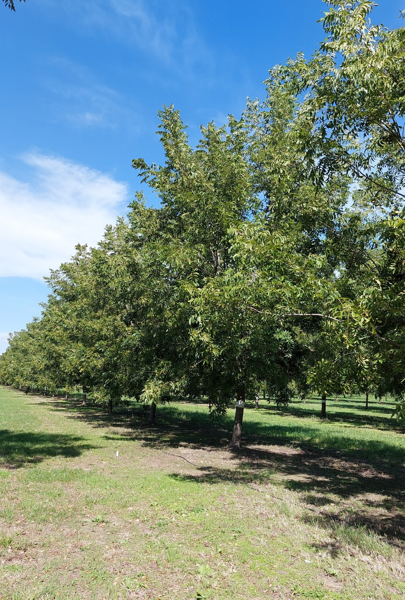
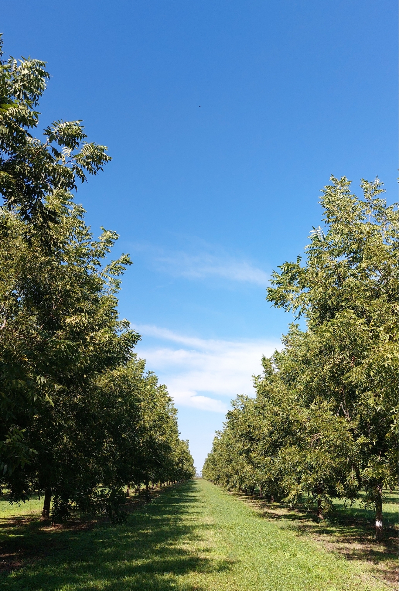
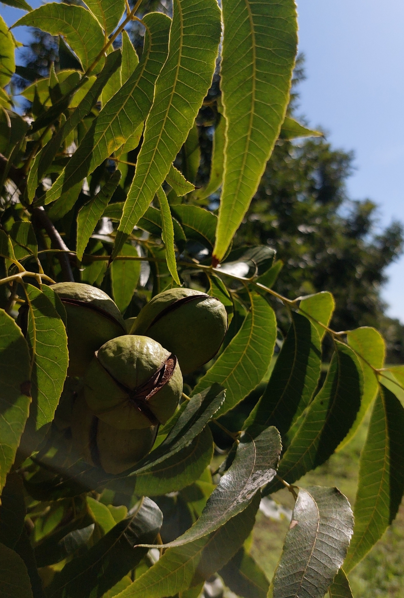

Pecanes Don Julián es una empresa de origen familiar dedicada a la producción y comercialización de nueces pecán, ubicada en la región centro de la provincia de Santa Fe, Argentina.
El proyecto nació con el propósito de desarrollar una actividad sustentable, en armonía con la naturaleza y el entorno rural, ofreciendo un producto de alta calidad con valor agregado local.
La primera plantación se realizó en el año 2014, incorporando nuevas plantas en 2015 y 2016, consolidando así un monte productivo que hoy refleja años de trabajo, paciencia y compromiso.
Así nació Pecanes Don Julián, un emprendimiento familiar que hoy produce nueces pecán de alta
calidad,
vendidas a granel y también transformadas en deliciosas nueces caramelizadas y choco nuez.
Pero más allá del producto, lo que realmente nos mueve es la convicción de que sí se puede producir
de otra manera:
respetando los ciclos naturales, cuidando el suelo, y dejando un legado verde para quienes vengan después.


